Hearing the Room Through the Shape of the Drum:
Modal-Guided Sound Recovery from Multi-Point Surface
Vibrations
TL;DR: We significantly improve speckle-based sound recovery from ordinary, acoustically poor objects by fusing signals from many surface points using a physics-guided vibration model.
Prior visual vibrometry focused on “easy” objects with strong, clean vibration responses (e.g., a chip bag (click the left spectrogram)). But most real-world objects behave very differently: they resonate, distort, and suppress large parts of the sound signal spectrum (click the middle spectrogram).
We introduce a physics-guided model that links multi-point, multi-axis surface vibrations to the underlying sound, and invert it to recover clear audio. By fusing many weak, distorted vibration signals, we reconstruct sound from everyday solid objects that previously yeilded poor recordings.

Click on the side-by-side spectrogram to appreciate the difference in quality.
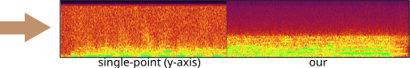
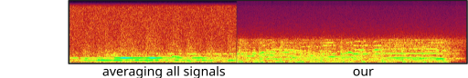
Can't you just average the point signals?
Short answer: NO!
The degradation is not just measurement noise -- it is
inherent to the physical nature of a vibrating surface. Naively averaging the signal from multiple points, or even
using classic delay-and-sum approaches may yeild even worse sounding results (click below to hear). In the next Section, we explain the intuition for why that is.

Physics-guided surface vibration model
The vibrations we measure on the object's surface can be modeled as a combination of the object's resonant modes. Each mode comprises a shape and a frequency, determining its temporal oscillations. The mode coefficients q(t) determine the instantaneous shape deformation at time t.
Our camera measures a quantity proportional to the spatial surface gradients at a grid of surface points.
The graphics below illustrate the challenge we face when fusing signals from multiple points and the intuition behind our solution. In general, all modes may be active simultaneously when the drum vibrates, but below we focus on only two modes having frequencies 198Hz and 411Hz (taken from real data). Our camera measured vibrations at 100 grid points on the drumhead’s surface, with each point providing a 2D signal illustrated by the quiver plots below.
Now, let’s focus on the yellow and cyan grid points. In the first mode (198Hz), these two points have opposite phases, while in the second mode, their phases are in sync. This means that if we sum the raw signals from these two points, as is, the 198Hz component of our signal will be squashed by destructive interference, while the 411Hz component will be constructively amplified. This is why simple averaging yields a poor recovery.
Moreover, notice that there isn’t a simple global delay (as in Delay-and-Sum) that synchronizes both frequencies, since synchronizing one frequency will nullify the synchronization in the other. The captured point signals differ not only in phase but also in magnitude. This is illustrated by the second pair of points in the graphic below. Notice that in the first mode, the orange point falls near the mode’s peak. Because we measure the surface gradients, which vanish near peaks or valleys, the signal from the orange point at this frequency (198Hz) is weak. But in the second mode, the situation is reversed, and here the cyan point falls on a mode peak. Consequently, different surface points provide different transfer functions (filters) to the scene sound depending on their geometric location.
Our solution: Modal-Guided Sound Recovery
In this paper, we introduce a principled physics-based solution to recover a denoised estimate of the scene sound from the multi-point multi-axis vibration signals. We rely on the insight illustrated in the visualization above: that the relative phase and magnitude information required to optimally fuse the various 1D signals is provided by the objects' measured modes. Our solution comprises recovering the modes from the data and using them to optimize the extraction of the denoised scene sound, while relying on an analytical approximation of how these modes span the object’s vibration space. See the paper for full technical details.

SELECTED RESULTS
We tested our framework on a varaiety of objects. We show a representative selection here. From well-covered surfaces:

|

|

|
| drum | single point | ours |
|---|---|---|

|

|

|
| picture frame | single point | ours |
to partially covered ones:

|

|

|
| guitar | single point | ours |
|---|
Our method can also handle non-planar objects:

|

|

|
| physio ball | single point | ours |
|---|---|---|

|

|

|
| balloon | single point | ours |
and various materials, like metal:

|

|

|
| trash can | single point | ours |
|---|
Our system can also handle multiple sound sources:
|
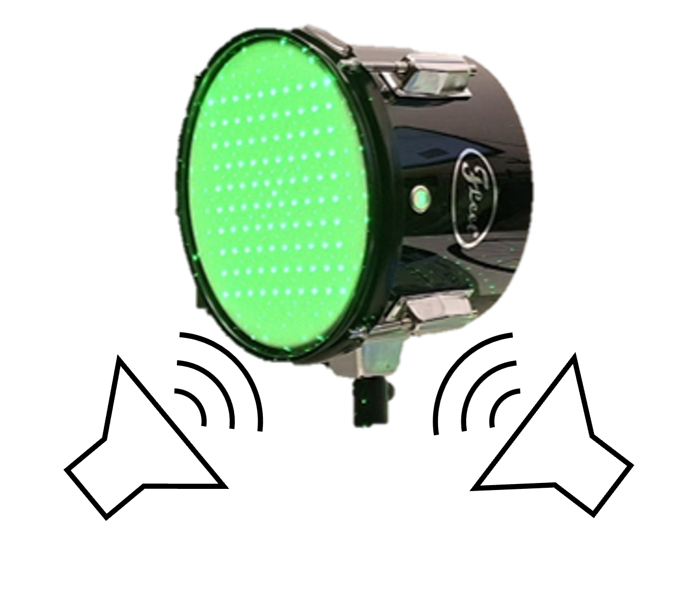 |

|

|
| drum (stereo) | single point | ours |
|---|
and even provides denoised recordings beyond thin plates (our model's assumption):

|

|

|
| yoga foam (solid) | single point | ours |
|---|
How far are we from best possible recovery?
So have we solved speckle-based sound recovery? Short answer: No.
To answer the question above, we developed a procedure to estimate the transfer function between the sound source and each 1D measurement directly.
This can be achieved by playing a known reference

|

|

|
| our recovery | calibrated recovery | source signal |
|---|
As you can hear, the calibrated recovery is slightly better, especially in recovering high-frequencies. So there's still room for improvement. Can you slay this challenge?
BTW: How sensitive are you to the recovered modes?
Our method is affected by the quality of the estimated modes. Recovering the modes is easiest from a broadband signal, such as a “clap”, “snap”, or “bang” sound (click spectrogram (a)). However, using the original recording may work just as well (click spectrogram (b)). Failing to detect some of the modes, may somewhat degrade the reconstruction quality (click spectrogram (c)). Yet, falsely adding spurious mode frequencies introduces pronounced artifacts and unnatural resonances (click spectrogram (d)).In other words, having the right frequencies matters more than having all of them.
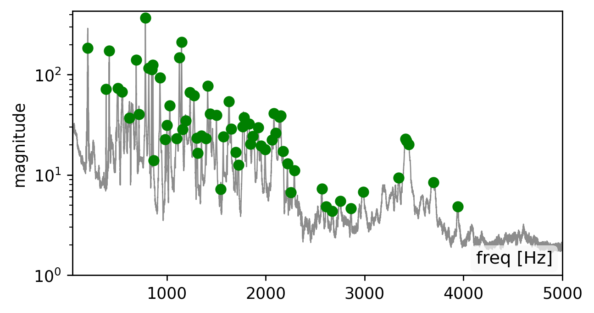
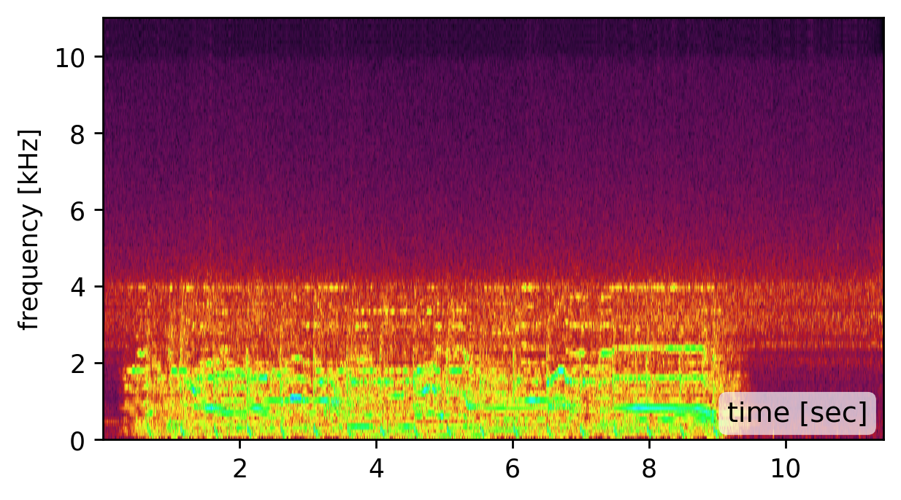
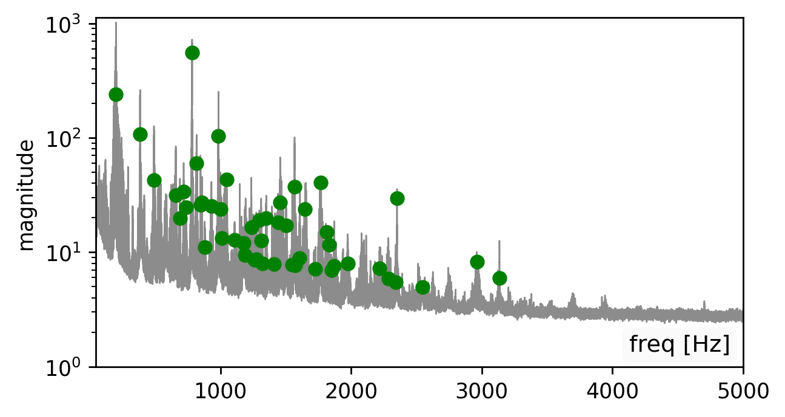
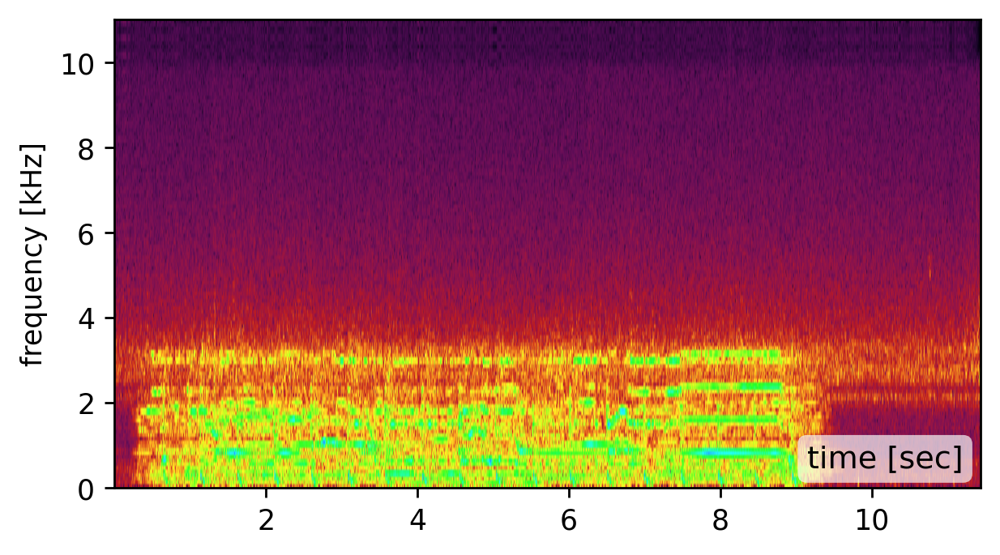
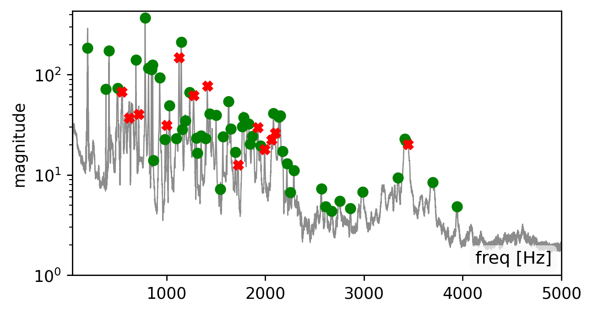
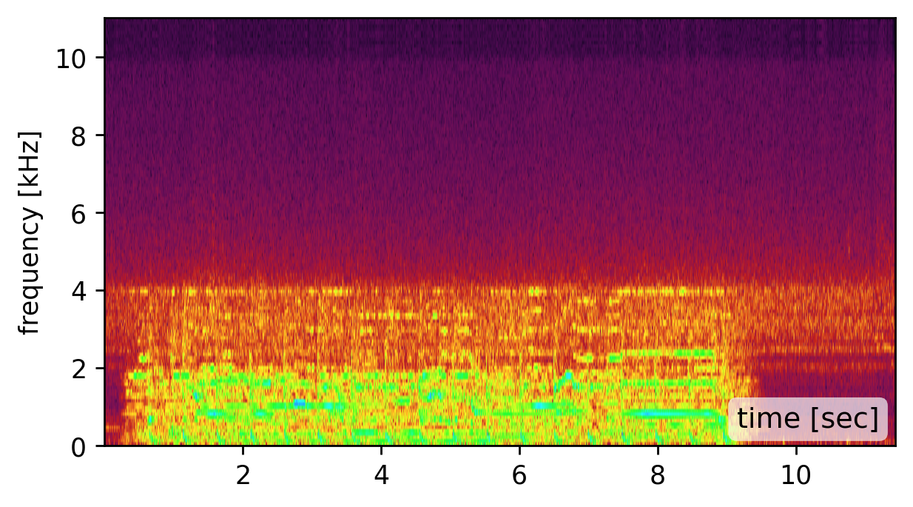
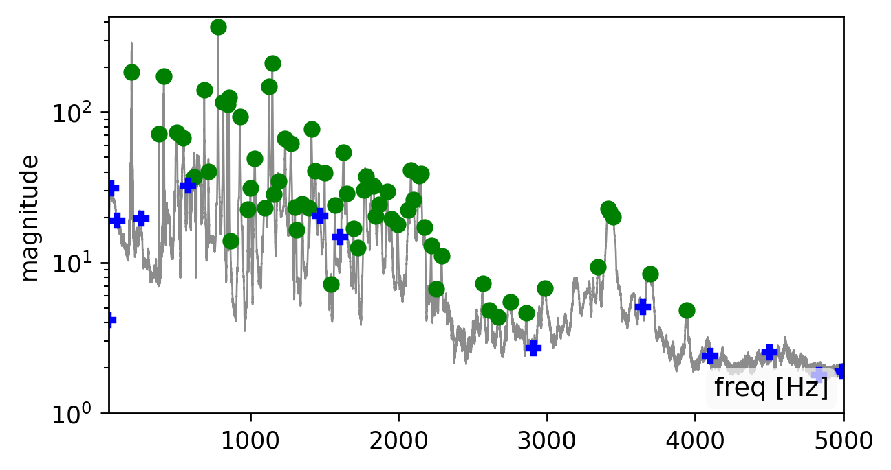
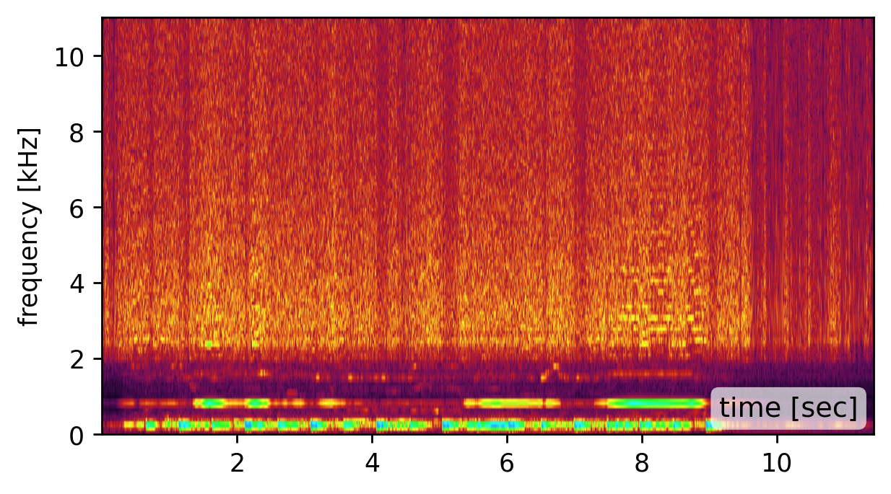
BibTeX
@inproceedings{bagon:2026:hearingShape,
title={Hearing the Room Through the Shape of the Drum: Modal-Guided Sound Recovery from Multi-Point Surface Vibrations},
author={Bagon, Shai and Kichler, Matan and Sheinin, Mark},
booktitle={Proceedings of the The IEEE/CVF Conference on Computer Vision and Pattern Recognition (CVPR)},
year={2026}
}